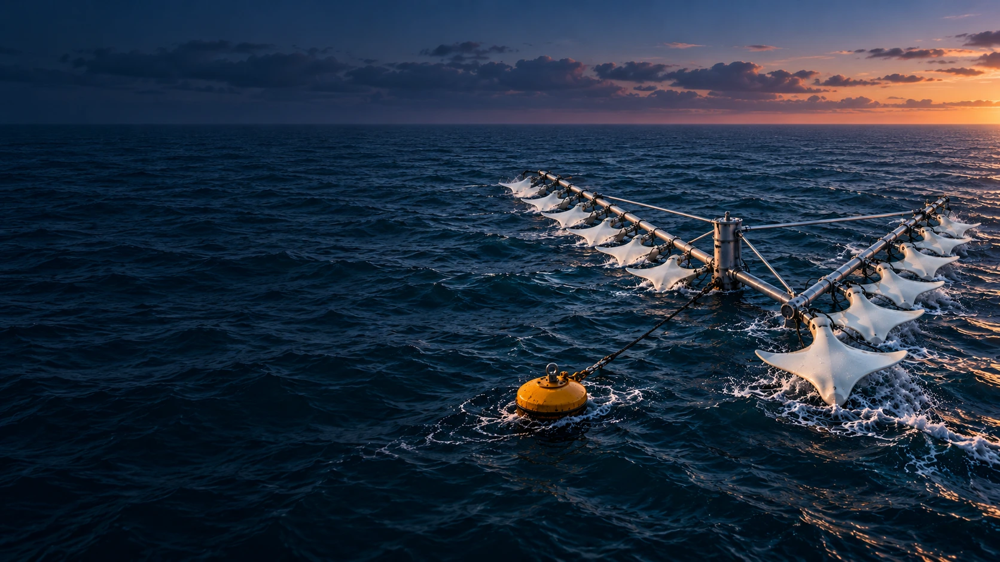
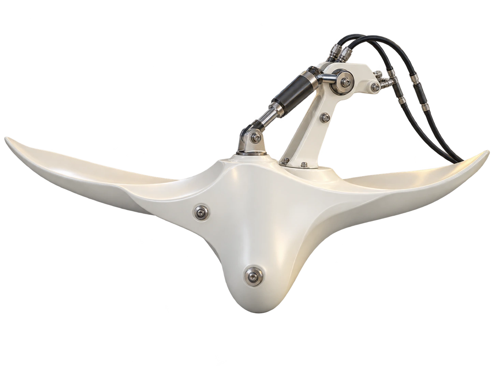

WAVE ENERGY / A DIFFERENT CURRENT
The ocean moves.
We move with it.
Wave-energy technology in development.
Cleaner power for the world beyond the shore.
OCEAN AMBITION. TANGIBLE RESEARCH.The possibility is vast.
The possibility is vast.
Start with the evidence.
We’re developing a modular wave-energy system for offshore users, starting with a simple idea: put the motion around them to work.
Why we’re building it ↗ RESEARCH & PROTOTYPE STAGE
Laboratory work and simulations guide development. Integrated-system testing and offshore validation are the next steps.
Explore a collaborationFORM WITH A PURPOSEShaped by nature.
Shaped by nature.
Driven by research.
The second-generation direction explores a ray-inspired float, two rotational axes and hydraulic energy transfer.
Meet the technology +
PROTOTYPE-BASED CONCEPT VISUALISATION